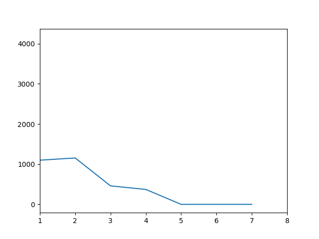

When I started this project, I wanted to learn how to make a basic AI. I found the minimax algorithm and it was a good way to start, so I wanted to implement it on a game. And a simple game easy to understand to begin with was the game of tic tac toe. I also learned the alpha beta pruning because the AI was a bit slow without it.
I tried to see how many times my AI was going to win against the random AI. And I tried it with different max number of depth in the minimax algorithm. On the image just below you can see the number of winning (on 10K round) of the random AI by the depth of the minimax algorithm. As you can see, the random AI can win some of the game with a low depth but after a depth of 5 the minimax AI win all the match.
I did this project in python, I create differents objects to make a tic tac toe game and I create a "dumb" AI that play randomly just for testing. I created another AI that follow the minimax algorithm. the heuristic function is not really complex : if no one win then it's a value of 0, and if the AI win then it's a positive one multiply by the remaining empty case (I did this so the AI look for a quick win). If the AI is loosing then it's the same with a negative sign.
This was an old project so it's not really optimized. For exemple with the minimax algorithm I used deepcopy to copy the state of the game but it's more efficient to just undo the last move. Feel free to make a better version of this.
The link to source code : Github link